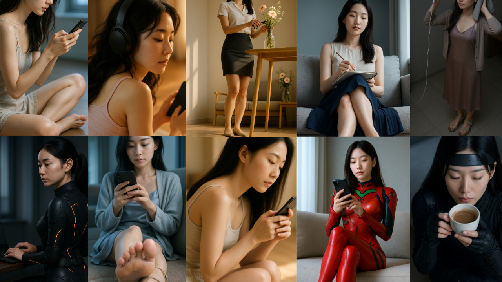

Lazyprompt
레이지프롬프트
🖼️📹 이미지·동영상 프롬프트 생성기
무료 8K·4K 시네마틱 미디어 텍스트 툴
이미지 프롬프트 생성기
이 웹버전은 입문자도 쉽게 사용할 수 있는 무료 프롬프트 생성 도구입니다.
국적 선택, 기본 포즈와 감정 조합만으로도 감각적인 이미지 프롬프트를 빠르게 만들어보세요.
총 약 2,000만 가지 이상의 조합이 가능하며, 실제 생성된 프롬프트는 ChatGPT, Gemini, Midjourney, DALL·E, Sora, Stable Diffusion, Adobe Firefly, Microsoft Copilot, NightCafe Creator, Artbreeder, Deep Dream Generator, Hotpot.ai, starryai 등 다양한 이미지 생성 AI에서 바로 사용 가능합니다.
정밀한 얼굴형, 손톱 스타일, 고급 렌더링 퀄리티, 조명-피부 묘사 등의 기능을 제공합니다. (실시간 업데이트 중)
동영상 프롬프트 생성기
레이지 프롬프트는 동영상 프롬프트도 제공합니다. 시네마틱 AI 영상 생성에 최적화된 무료 프롬프트 도구입니다.
한국인/일본인/중국인/서양인, 포즈와 행동, 카메라 무빙 등을 조합하여 4K 동영상 프롬프트를 자동으로 생성해보세요.
생성된 프롬프트는 Veo3, Sora, Runway, Pika, Gemini, ChatGPT, InVideo AI, Pictory AI, Synthesia, Descript, HeyGen, Lumen5, FlexClip, Raw Shorts, Viide.io, Kaiber, Gen-1, Gen-2 등 다양한 영상 AI 모델에서 바로 사용 가능합니다.
세밀한 카메라 무브먼트, 씬 전환 묘사, 텍스처 묘사 기능을 포함합니다. (실시간 업데이트 중)
블로그 프롬프트 생성기
블로그 초보자부터 콘텐츠 마케터까지 누구나 쉽게 활용할 수 있는 실전형 글쓰기 프롬프트 도구입니다.
작성 목적, 타깃 독자층, 플랫폼 스타일, 톤앤매너 등을 선택하면 자동으로 서론–본문–결론 구조의 블로그 문장을 생성해줍니다.
SEO 키워드 반영, 스토리텔링 구조, 클릭 유도 문구, 감성 에세이부터 Q&A, 리스트형, 정보형까지 다양한 형식에 맞춘 생성이 가능합니다.
생성된 프롬프트는 ChatGPT, Claude, Gemini, Notion AI, Copy.ai 등 다양한 AI 글쓰기 툴에 바로 붙여 넣어 사용할 수 있습니다.
수익형 콘텐츠, 후기 리뷰, 자기계발, 전문가 브랜딩 등 콘텐츠 마케팅 전략에 최적화된 구성을 제공합니다. (실시간 업데이트 중)
AI 4컷 만화 아이디어 생성기 ✨
만화 창작 초보자부터 웹툰 작가 지망생, SNS 콘텐츠 제작자까지 누구나 쉽게 활용할 수 있는 기발한 4컷 만화 아이디어 발상 도구입니다.
만화 장르, 주인공 타입, 그림체, 개그 포인트 등을 선택하면 자동으로 기승전결 구조의 4컷 만화 스토리를 생성해줍니다.
캐릭터 특징 반영, 반전 있는 스토리텔링, 코믹한 상황 연출, 일상 개그부터 판타지 유머, 은근한 암시 코믹까지 다양한 분위기의 아이디어 생성이 가능합니다.
생성된 아이디어와 함께 제공되는 상세 이미지 프롬프트는 Midjourney, DALL·E, Stable Diffusion 등 다양한 AI 이미지 생성 툴에 바로 붙여 넣어 여러분의 4컷 만화를 시각화할 수 있습니다.
SNS 짧은 만화, 유머 콘텐츠, 스토리 구상, 캐릭터 개발 등 창의적인 콘텐츠 제작에 최적화된 구성을 제공합니다. (새로운 옵션 실시간 업데이트 중!)
예시 이미지

▲ “8K ultra-realistic…” 예시
예시 이미지

▲ “8K ultra-realistic…” 예시
예시 동영상
▲ “cold dawn light…” 예시
예시 동영상
▲ “cold dawn light…” 예시
예시 블로그 프롬프트

▲ 자동 생성된 블로그 글 구조 예시
예시 4컷만화 프롬프트

▲ 자동 생성된 4컷만화 구조 예시